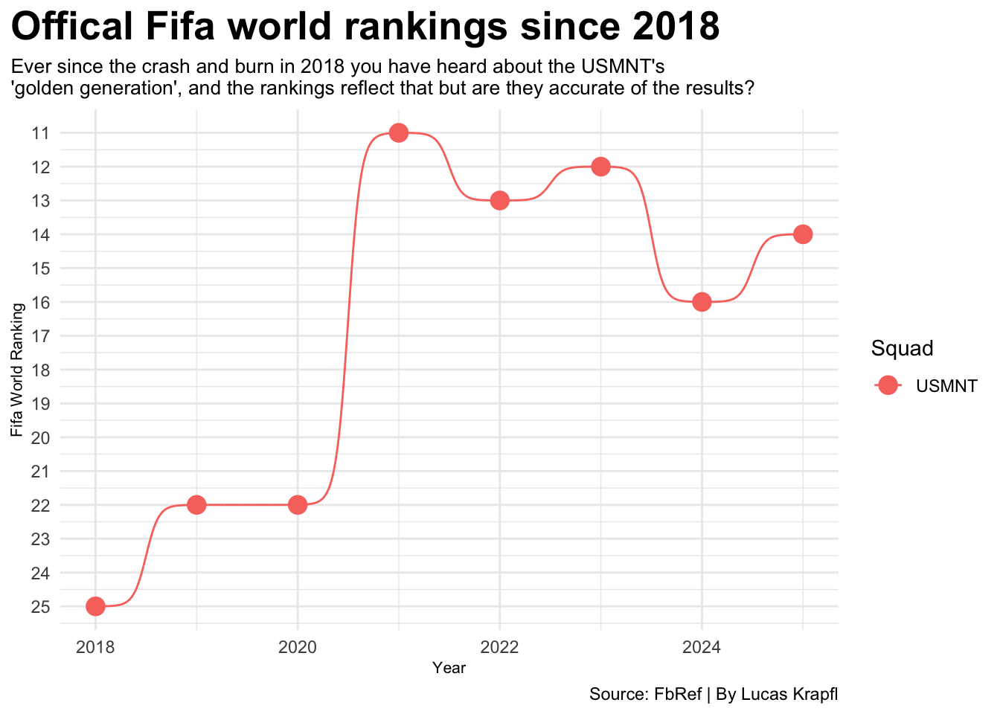
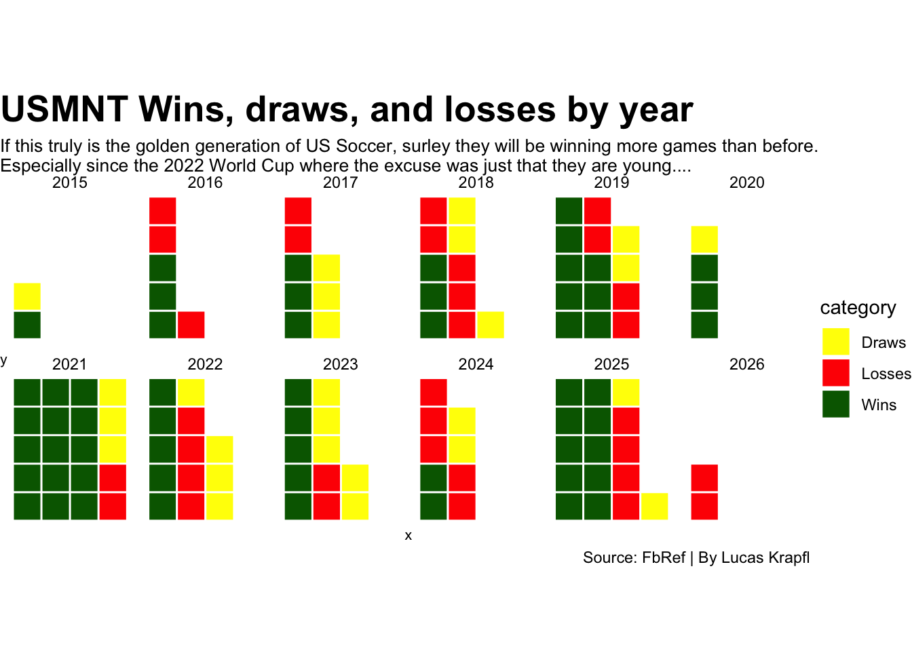
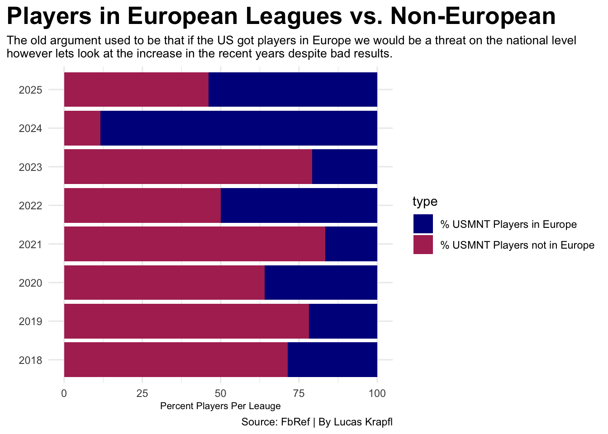
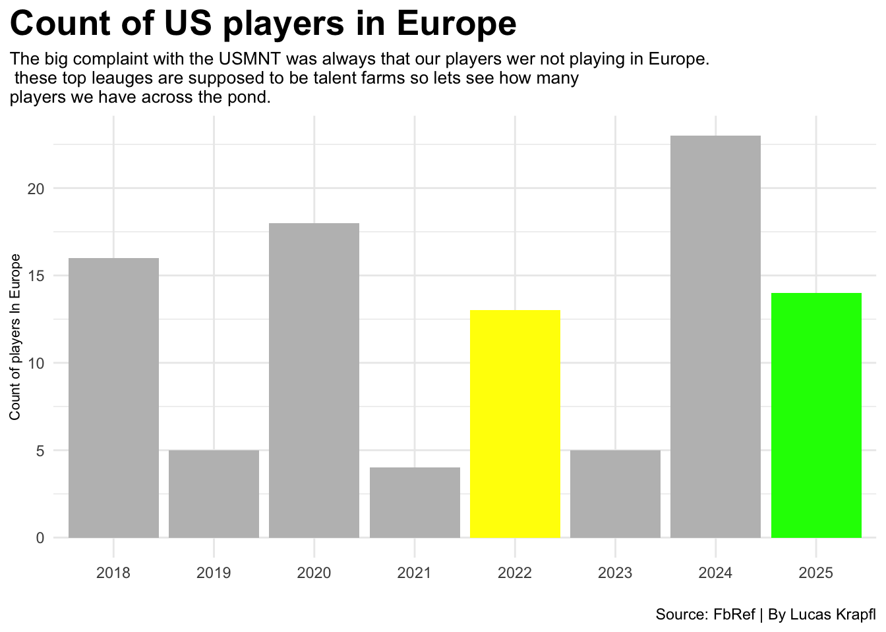
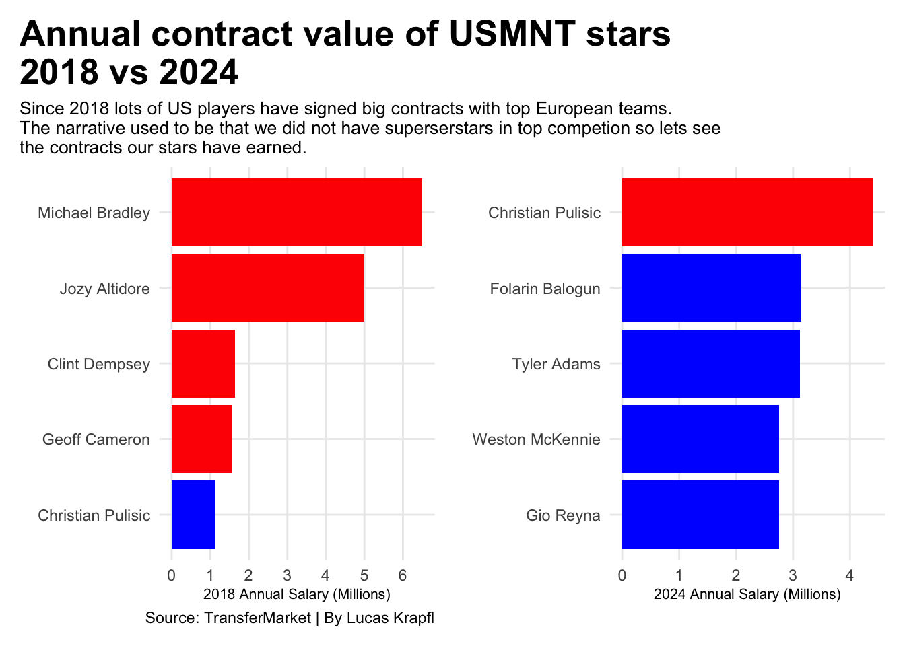
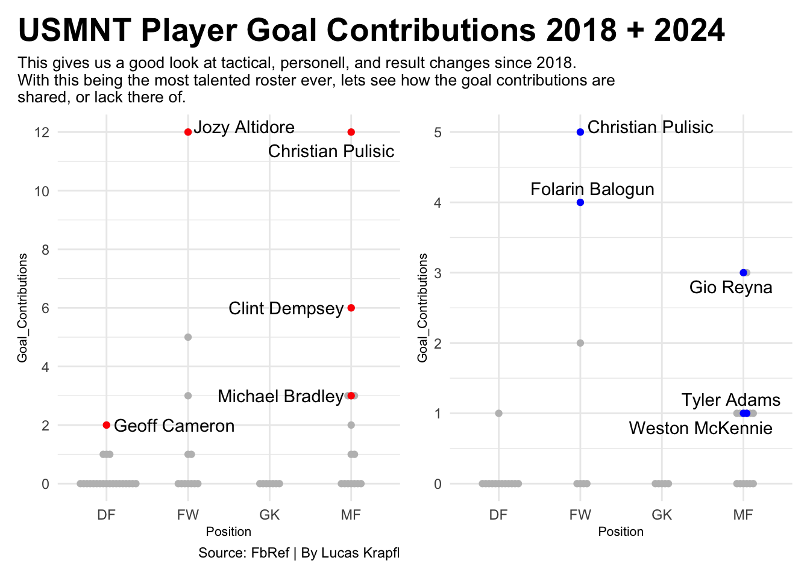
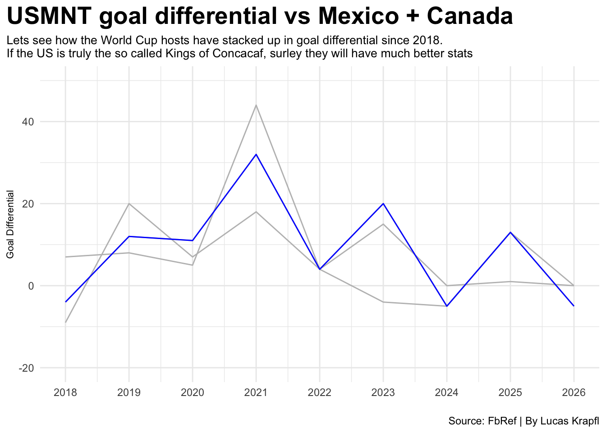

Everyone remembers the historic failure of the USMNT in 2018, losing to Trinidad and Tobago to miss the World Cup in one of the most embarrassing soccer games ever played. However, the group of players that followed were named the “Golden Generation” of US soccer as we went toward the 2022 World Cup and Beyond.
As we are around 2 months away from a World Cup here in the USA, lets take a look at if the USMNT has truly improved since 2018 and if they have lived up to the nickname of America’s Golden Generation.
Code
ggplot() +geom_bump(data=FifaRank, aes(x=Year, y=Rank, color=Squad)) +geom_point(data=FifaRank, aes(x=Year, y=Rank, color=Squad), size =4) +scale_y_reverse(breaks =seq(25, 10, -1))+labs(title="Offical Fifa world rankings since 2018", subtitle="Ever since the crash and burn in 2018 you have heard about the USMNT's \n'golden generation', and the rankings reflect that but are they accurate of the results?", y="Fifa World Ranking", x ="Year", caption="Source: FbRef | By Lucas Krapfl") +theme_minimal() +theme(plot.title =element_text(size =20, face ="bold"),axis.title =element_text(size =8), plot.subtitle =element_text(size=10), plot.title.position ="plot")

Obviously there was a lot of hype coming up to the 2022 world cup, but it has clearly started to fall away. Some of that is coaching turnover, others of it could be losing faith in the young players who didn’t pan out. Lets look at the recent results and see if it backs up the rankings:
Code
team_rows <-5season_waffle <- UScomplete |>select(Year, Wins, Losses, Draws) |>pivot_longer(cols=-Year, names_to ="category", values_to ="count") |>uncount(count) |>group_by(Year) |>mutate(x = (row_number() -1) %/% team_rows +1,y = (row_number() -1) %% team_rows +1 ) |>ungroup()SZN21 <- season_waffle |>filter(Year =="2021")SZN25 <- season_waffle |>filter(Year =="2025")ggplot() +geom_tile(data=season_waffle, aes(x = x, y = y, fill = category ), color ="white",linewidth = .5) +scale_fill_manual(values =c("Wins"="darkgreen", "Losses"="red", "Draws"="yellow"))+facet_wrap(~Year, ncol =6) +coord_equal() +labs(title="USMNT Wins, draws, and losses by year", subtitle="If this truly is the golden generation of US Soccer, surley they will be winning more games than before.\nEspecially since the 2022 World Cup where the excuse was just that they are young....", caption="Source: FbRef | By Lucas Krapfl") +theme_void() +theme(plot.title =element_text(size =20, face ="bold"),axis.title =element_text(size =8), plot.subtitle =element_text(size=10), plot.title.position ="plot")

Well clearly the results have become sketchy at best. But hey, the one thing USMNT fans have always said is “As soon as we get players into Europe we will be way better and a threat on the global level.” Over the last few years we have seen a lot of US players go to Europe and ride the bench the whole season… not ideal for staying in shape for international duty
New USMNT manager Mauricio Pochetino has made it clear that he is playing players based on there club form. Lets look at the trends of where our players are playing before and after he took over:
Code
USPlayers2025 <- EUPlayerCount |>filter(Year =="2025")USPlayers2022 <- EUPlayerCount |>filter(Year =="2022")EUCount<-ggplot() +geom_bar(data=EUPlayerCount, aes(x=factor(Year), weight=European_Players), fill="grey")+geom_bar(data=USPlayers2025, aes(x=factor(Year), weight=European_Players), fill="green") +geom_bar(data=USPlayers2022, aes(x=factor(Year), weight=European_Players), fill="yellow") +labs(title="Count of US players in Europe", subtitle="The big complaint with the USMNT was always that our players wer not playing in Europe.\n these top leauges are supposed to be talent farms so lets see how many \nplayers we have across the pond.", y="Count of players In Europe", x ="", caption="Source: FbRef | By Lucas Krapfl") +theme_minimal() +theme(plot.title =element_text(size =20, face ="bold"),axis.title =element_text(size =8), plot.subtitle =element_text(size=10), plot.title.position ="plot") USEUPerctBar <-USEUPerct |>group_by(Year) |>summarise(Players_Europe =sum(Europe_Based)/Total_Players *100,Players_NonEurope =sum(Non_Europe_Based)/Total_Players *100, ) |>select(Year, Players_Europe,Players_NonEurope)USEUPerctLong <- USEUPerctBar |>arrange(Year) |>pivot_longer(cols=starts_with("Players"),names_to="type", values_to="percent")ggplot() +geom_bar(data=USEUPerctLong, aes(x=reorder(Year, percent), weight=percent, fill=type)) +scale_fill_manual(values =c("Players_Europe"="darkblue", "Players_NonEurope"="maroon"),labels =c("Players_Europe"="% USMNT Players in Europe", "Players_NonEurope"="% USMNT Players not in Europe"))+coord_flip()+labs(title="Players in European Leagues vs. Non-European", subtitle="The old argument used to be that if the US got players in Europe we would be a threat on the national level\nhowever lets look at the increase in the recent years despite bad results.", y="Percent Players Per Leauge", x ="", caption="Source: FbRef | By Lucas Krapfl") +theme_minimal() +theme(plot.title =element_text(size =20, face ="bold"),axis.title =element_text(size =8), plot.subtitle =element_text(size=10), plot.title.position ="plot")

Code
EUCount + USEUPerctBar

Clearly we have a lot of talent if we are putting that many players in the top leagues. With higher competition comes bigger contracts. Lets look at the compensation the “golden generation” players are getting vs the top 5 players on the disappointing 2018 team
Code
Contracts2024 <- Salaries18v24 |>filter(Year =="2024")Contracts2018 <- Salaries18v24 |>filter(Year =="2018")Pulisic2018 <- Contracts2018 |>filter(Player=="Christian Pulisic")Pulisic2024 <- Contracts2024 |>filter(Player=="Christian Pulisic")StarSals2018 <-ggplot() +geom_bar(data=Contracts2018, aes(x=reorder(Player, Annual_Salary_Millions), weight=Annual_Salary_Millions), fill="red") +scale_y_continuous(breaks =seq(0, 8, 1)) +geom_bar(data=Pulisic2018, aes(x=reorder(Player, Annual_Salary_Millions), weight=Annual_Salary_Millions), fill="blue") +coord_flip() +labs(title ="Annual contract value of USMNT stars\n2018 vs 2024",subtitle ="Since 2018 lots of US players have signed big contracts with top European teams.\nThe narrative used to be that we did not have superserstars in top competion so lets see \nthe contracts our stars have earned.",y ="2018 Annual Salary (Millions)",x ="",caption="Source: TransferMarket | By Lucas Krapfl" )+theme_minimal()+theme(plot.title =element_text(size =20, face ="bold"),axis.title =element_text(size =8), plot.subtitle =element_text(size=10),panel.grid.minor =element_blank(),plot.title.position ="plot" )StarSals2024 <-ggplot() +geom_bar(data=Contracts2024, aes(x=reorder(Player, Annual_Salary_Millions), weight=Annual_Salary_Millions), fill="blue") +scale_y_continuous(breaks =seq(0, 8, 1)) +geom_bar(data=Pulisic2024, aes(x=reorder(Player, Annual_Salary_Millions), weight=Annual_Salary_Millions), fill="red") +coord_flip() +labs(y ="2024 Annual Salary (Millions)",x ="" )+theme_minimal()+theme(plot.title =element_text(size =20, face ="bold"),axis.title =element_text(size =8), plot.subtitle =element_text(size=10),panel.grid.minor =element_blank(),plot.title.position ="plot" )StarSals2018 + StarSals2024

Clearly the median pay for a star has gone up but we do not have that anchor superstar like they had with Michael Bradley. But hey, if the whole team is pretty good and earning big contracts, surely they are putting up big numbers for the USMNT too…
Code
Bees2018 <-ggplot() +geom_beeswarm(data=US2018, aes(x=Position, y=Goal_Contributions), color="grey") +geom_beeswarm(data=Stars2018, aes(x=Position, y=Goal_Contributions), color="red") +scale_y_continuous(breaks =seq(0, 15, 2)) +geom_text_repel(data=Stars2018, aes(x=Position, y=Goal_Contributions, label=Player))+labs(title="USMNT Player Goal Contributions 2018 + 2024", subtitle="This gives us a good look at tactical, personell, and result changes since 2018.\nWith this being the most talented roster ever, lets see how the goal contributions are \nshared, or lack there of.", caption="Source: FbRef | By Lucas Krapfl") +theme_minimal() +theme(plot.title =element_text(size =20, face ="bold"),axis.title =element_text(size =8), plot.subtitle =element_text(size=10), plot.title.position ="plot")Bees2024 <-ggplot() +geom_beeswarm(data=US2024, aes(x=Position, y=Goal_Contributions), color="grey") +geom_beeswarm(data=Stars2024, aes(x=Position, y=Goal_Contributions), color="blue") +geom_text_repel(data=Stars2024, aes(x=Position, y=Goal_Contributions, label=Player))+theme_minimal() +theme(plot.title =element_text(size =20, face ="bold"),axis.title =element_text(size =8), plot.subtitle =element_text(size=10), plot.title.position ="plot")Bees2018 + Bees2024

Yikes… A lot of this can be explained by the fact that they do not play in as many games due to their club coaches putting minutes restrictions on the stars. They also play a much more rigid style of football where it is defend first make attacking magic second. They work to not lose rather than flying around and seeing what happens in the past. This has been a trend with the international game as a whole
Lastly, with this change in style lets take a look at the goal differential over the last few years to visualize the change in play.
Code
ggplot() +geom_line(data=WCHcomplete, aes(x=Year, y=Goal_Differential, group=Squad), color="grey") +geom_line(data=UScomplete, aes(x=Year, y=Goal_Differential), color="blue") +scale_y_continuous(limits =c(-20, 50))+scale_x_continuous(breaks =seq(2018, 2026, 1), limits =c(2018, 2026)) +labs(title="USMNT goal differential vs Mexico + Canada", subtitle="Lets see how the World Cup hosts have stacked up in goal differential since 2018.\nIf the US is truly the so called Kings of Concacaf, surley they will have much better stats", caption="Source: FbRef | By Lucas Krapfl",x="",y="Goal Differential") +theme_minimal() +theme(plot.title =element_text(size =20, face ="bold"),axis.title =element_text(size =8), plot.subtitle =element_text(size=10), plot.title.position ="plot")

Clearly, Concacaf struggles with stability. With all three of these teams hosting World Cup games in a month, the storylines will be interesting to follow. Does the USMNT finally rise into their Golden Generation status with a deep run, or do they burn out like the 2024 Copa America and 2018 WCQ? Does Mexico bring back their storied past and rise from the rubble of the rough seasons they have been through recently? Does Canada continue their miracle ascension and spark what would be one of the fastest rises of a team ever? In one month and change, we will have these answers and even more questions for some.